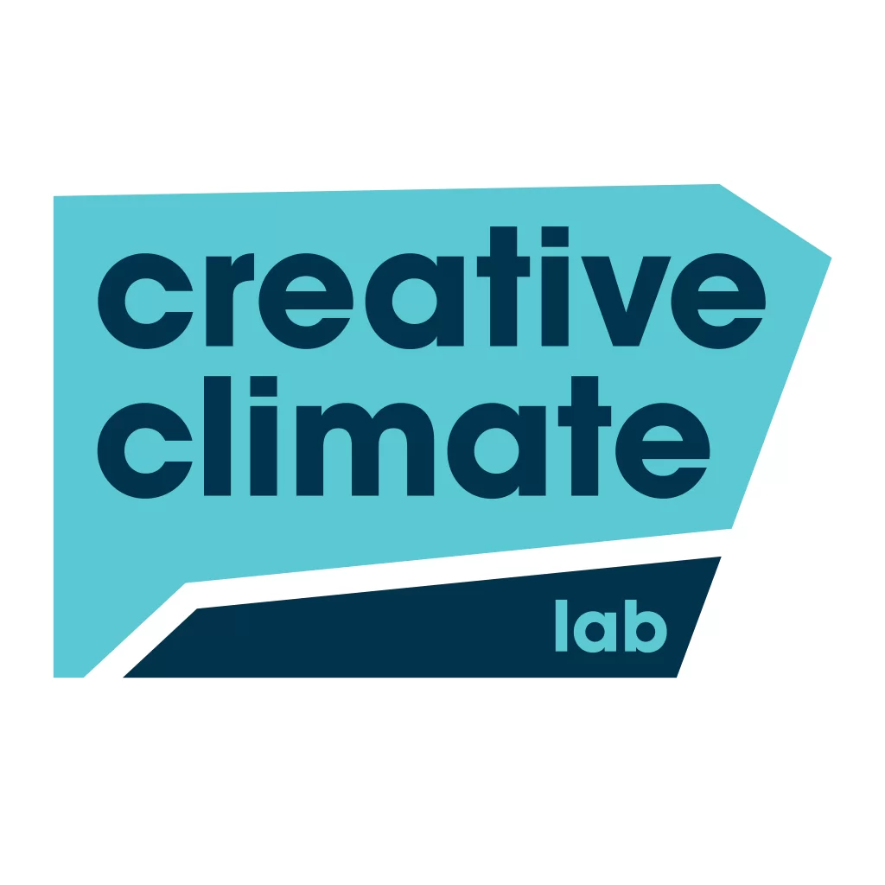
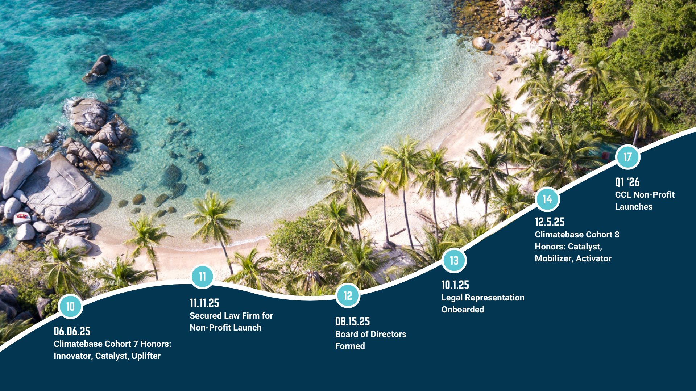
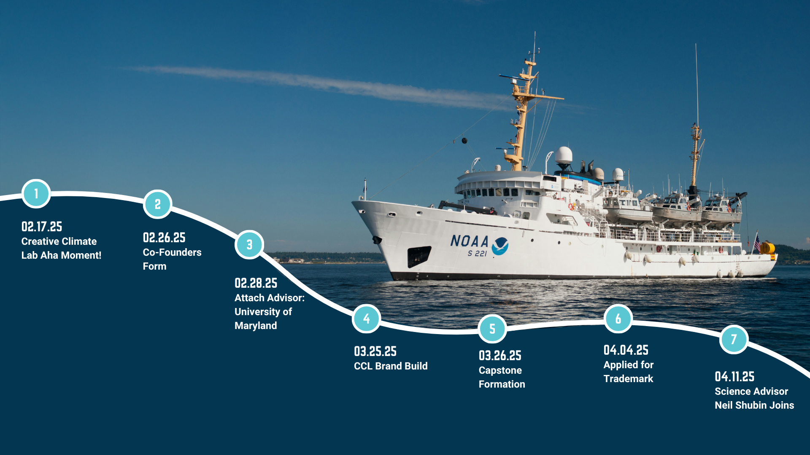
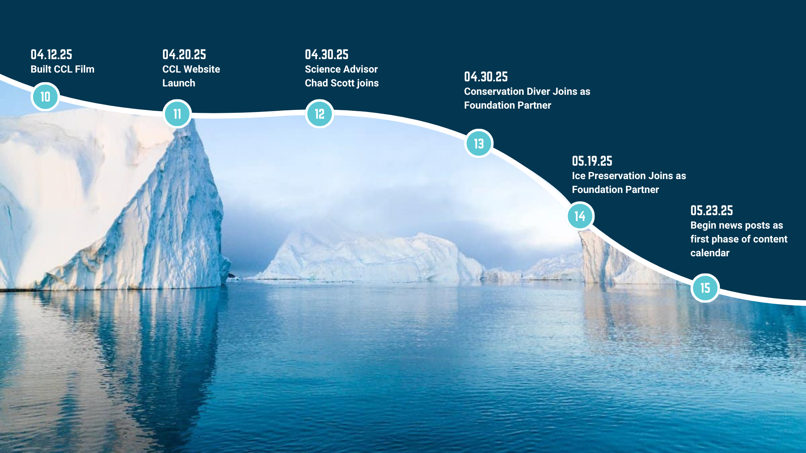

Charting Our Course
A marine-themed milestone timeline built for Creative Climate Lab's Climatebase fellowship capstone pitch deck

Created for Creative Climate Lab



The Ask
Creative Climate Lab needed a single visual that could do double duty: anchor the Climatebase fellowship capstone presentation and get reused in future partnership proposals. The goal was to make the case, at a glance, for how much ground the team covered — founding, advisors, trademark filing, foundation partnerships, cohort honors — in a short window, without burying the story in a bullet-point timeline.
The Concept
CCL wanted a marine-based theme with a flow that carries the viewer along the timeline seamlessly, rather than a hard cut from one slide to the next. Each milestone sits as a numbered marker along one continuous curved line, and the line rides across a sequence of ocean photography — open water near a NOAA research vessel, then Arctic icebergs, then a tropical reef coastline — so the backdrop itself does the work of pulling the eye forward, slide to slide.
What the Timeline Covers
From the original Creative Climate Lab "Aha moment" and co-founders forming, through attaching a University of Maryland advisor and building the CCL brand.
Filing for trademark protection and bringing on science advisors, including Neil Shubin and Chad Scott, to back the mission with domain expertise.
Foundation partners joining — Conservation Diver and Ice Preservation among them — alongside the CCL film and website launch and the start of a regular content calendar.
Climatebase Cohort 7 and 8 honors, a board of directors formed, legal representation onboarded for the non-profit launch, and the planned Q1 2026 non-profit launch itself.
Laid end to end, the timeline argues for itself: this much structure, credibility, and partnership got built in one fellowship cycle. That's the pitch — to Climatebase reviewers in the capstone presentation, and to any future partner CCL brings the deck to next.